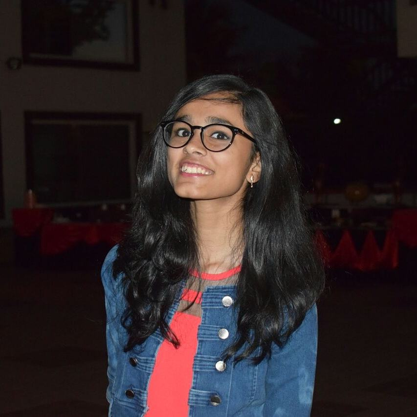
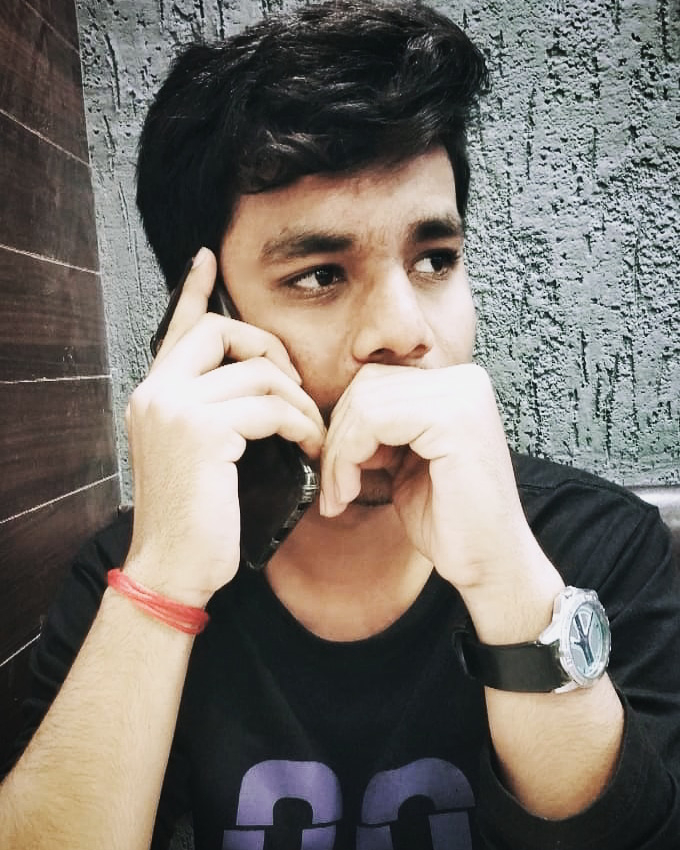
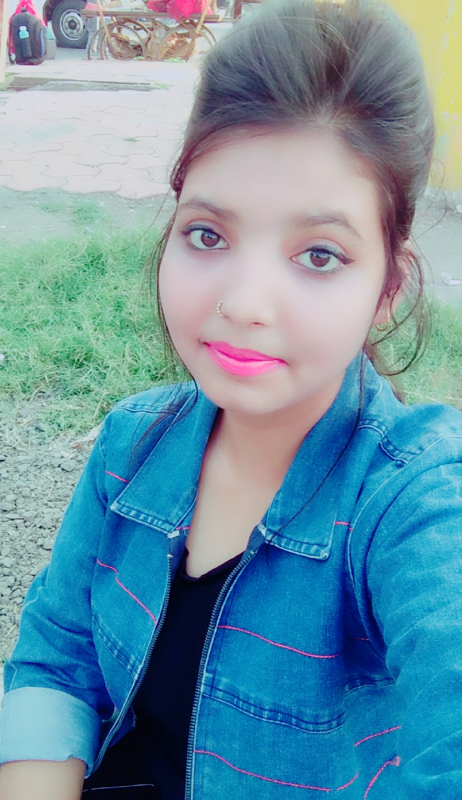

The "Brooklin Book Club" is a hub for the people who love to get lost in a different world than the world they are living in. It gives its
readers an oppotunity to discover their love for reading and gives an environment to let their soul wander in the endless world of books. This club is
founded by college students Krati Choudhary, Nayan Bhile and Elma Anwar to encourage the reader within everyone.
It has a huge collection of books from various genres to discover. This club was founded as a college group project and with the guidance, motivation
and support of the college faculty it rose up from a beginner's project to a global community of aspiring readers all across the globe. The main motive of this club is to make people get in touch with the beauty of words written in the various books and also to make it easier for the readers to find and read the book of their choice online without getting a huge hole in their pockets to buy the books. It makes the readers to engage their free time with a handy on the go
book in their mobile phones or PCs. We do not claim originality of any book, the credits of all books are with their respective authors and publishers.
We are just a medium to connect those books with the people.
About the Founders
Krati Choudhary

B.tech. (Computer Science- Artificial Intelligence)
1st Year
Shri Vaishnav Institute of Information and Technology
Nayan Bhile

B.tech. (Computer Science- Artificial Intelligence)
1st Year
Shri Vaishnav Institute of Information and Technology
Elma Anwar
